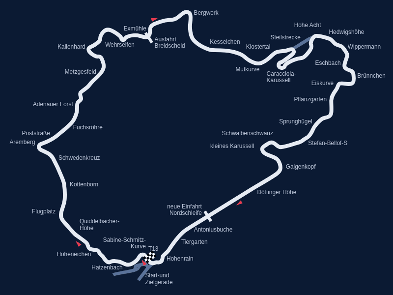

Карта: «Nürburgring - Nordschleife.svg», автор Will Pittenger, Wikimedia Commons, общественное достояние.
О трассе
Северная петля, «Зелёный ад» - больше 20 км, 73 поворота и около 300 м перепада высот. Здесь важен не один поворот, а ритм: Flugplatz, где машина подлетает, Fuchsröhre на огромной скорости, бетонный банкинг Карусели. Хороший круг в серийной спортивной машине занимает около восьми минут.
| Длина круга | 20832 м |
|---|---|
| Поворотов | 73 |
| Макс. скорость | 300 км/ч |
| Рекорд круга | 5:19.546 Т. Бернхард, Porsche 919 Evo, 2018 |
| Полный газ | - % дистанции |
| Торможение | - % дистанции |
Апексы
| № | Поворот | Дистанция, м | Скорость в апексе, км/ч | Передача |
|---|
Данные в CSV: apex_nurburgring.csv, телеметрия круга - telemetry_nurburgring.csv.
Телеметрия круга
Пунктир - границы секторов. Сектор 1 начинается от линии старта.